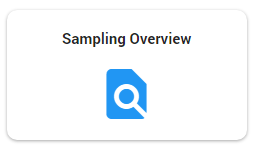
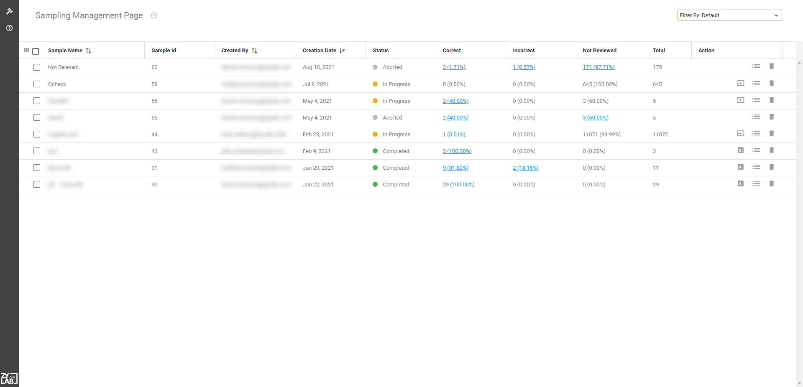
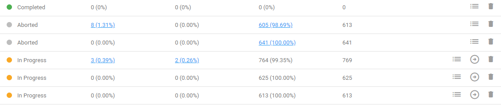

View your own or - with sufficient rights - all sample sets that have been created.
On the Home page, select Sampling Overview.

Of each sample set, you can see who created it and when.
By default, sample sets are sorted by Creation Date.
The columns Sample Name, Created By and Creation Date are clickable and sortable.

The status shows whether sampling is completed, in progress or aborted. You can filter the sample sets on their status:
You can see how many documents (in numbers and percentages) were evaluated correct or incorrect.
The amounts of documents in the corresponding columns are clickable. The documents will be shown on a separate page
You can view how many documents were not reviewed, and the total number of documents in the sample set.
You can perform some actions: Download Report  , View Sample Documents
, View Sample Documents  or Delete Sample .
or Delete Sample .
Clicking will take you to the Document List, showing all documents of that specific sample.
Sample sets that are In Progress can be resumed by clicking .
